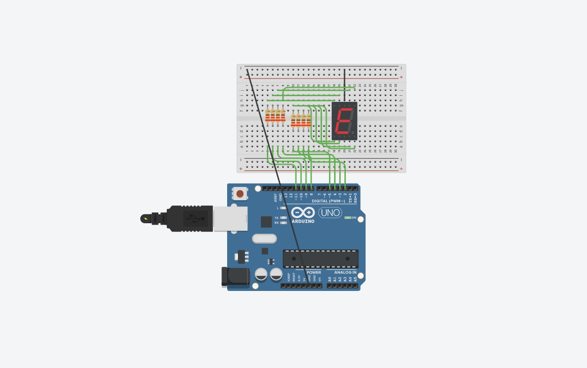

Project navigation
CAD part 1(GIMP, Inkscape, Fusion 360) • CAD part 2(Fusion 360 and chess piece) • Phone Stand • 2D graphics and computer-controlled cutting • Laser-cut accessories box • Electronics and embedded programming
Electronics and Embedded programming
Counter
Without actual electronics, I used tinkercad to do this project, which counts from 0-9 each second and loops back.
Given that there is no way to truly see this through a still image, Click the following link.
Click this!Flashing LED
Using the delay function and setting power to the LEDs as output from the arduino, I was able to get the LED to blink, and later get multiple LEDs light up in a specific sequence.
Source code
Digital IO
Assignment 12: one button, many states
The task of this is to press a button which will change the LED sequence. Holding the button for 3 seconds turns off all LEDs and resets it to its original state.
The project.I tried to explain what goes on in the source code using the "//" markers.
Source code